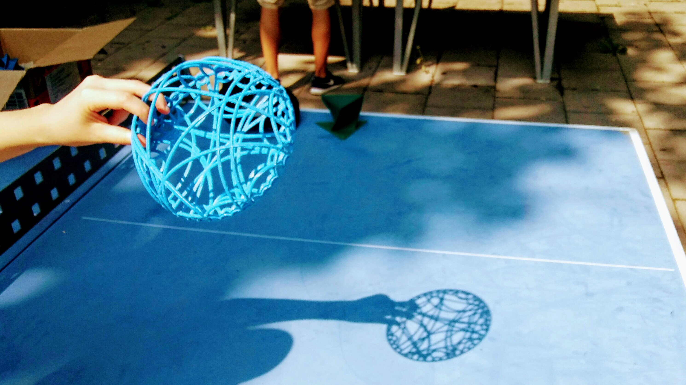
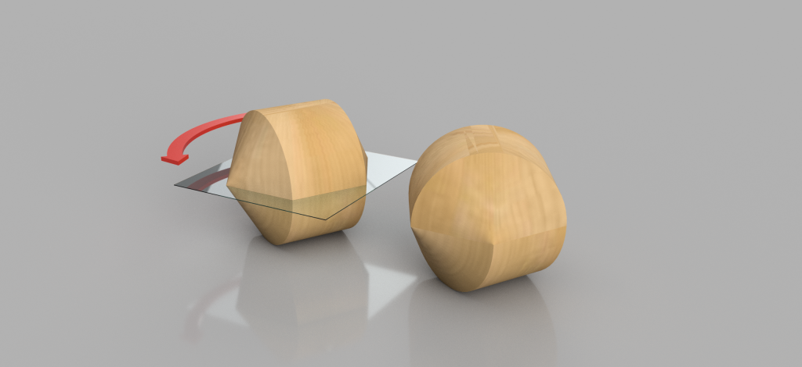

Participate!
Students
If you're a student, there are several ways you can get involved with the Lab:- Sign up for a project! We have great research projects mentored by faculty members. This will be an opportunity for you to learn fun mathematics, one or several
programming languages, and cool technology. Your project may or may not be part of your Bachelor or Master thesis.
At the end of your project, you will have the opportunity to share what you learned at the HEGL Seminar or by writing a blog entry on this website, for instance.
View the list of projects that we offer HERE. Alternatively, if you have your own idea for a project, let us know! To sign up for a project, send us an email. - Visit the Lab during opening hours (see here) to meet our members, ask questions, and use our equipment.
- Enroll in the Student Proseminar/Seminar! Navigate to this section to learn more.
- Sign up to our newsletter to hear the latest news: opening of the Lab, new projects, seminar announcements, etc. To sign up to the newsletter, send us an email.
Researchers
Whether you are a graduate student, a postdoc, or a professor, HEGL may be a great opportunity to complement your theoretical research with some experimental computations or visualization.
If you would simply like to use the Lab equipment, get in touch with us to discuss availabilities.
If you are interested in mentoring a research project, you are more than welcome to offer one: we will help you set it up and coordinate with the Lab!
If you would like to learn more about using technology to visualize mathematical objects or conduct experimental mathematics, we will be happy to see you either at the Lab, at the seminar, or touch base with you by email.
